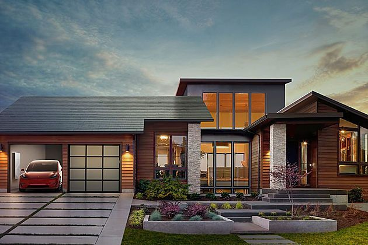

Do Solar Panels Work at Night?

There is plenty of sun to go around and now is the time to harness its power.
Solar energy is as reliable as the sun.Yet, it’s fair to ask:
Do Solar Panels Produce Energy At Night?
Technically, no. Solar panels do not produce energy at night. The photovoltaic cells in solar
panels must have sunlight to create electricity. But that’s not the bottom line. Solar panels offer two indirect
nighttime energy solutions.
Solar panels work hard all day producing electricity from the sun. They also support sustainable solar energy solutions at night.
You can continue benefiting from their energy production after sunset through net metering and solar battery storage. So,
when you ask,how do solar panels work at night? These are the two indirect ways that they can.
Solar energy is changing the way we power our lives. Electric grid connection with net metering and solar battery storage both allow
your solar energy system to provide electricity when your solar panels are resting—so you can rock around the clock.
Net Metering Keeps You Connected
Connecting your solar panel installation to the electric grid enables net metering. Where it's offered,
net metering kind of works like a savings account. When your solar panels produce excess electricity, it's deposited in the grid.
In return the electric company gives you a reimbursement or credits your bill. At nighttime, you can draw back on
those energy credits that you banked with the electric grid during the day.
With net metering, it's switched on when your panels aren’t producing energy at nighttime. This bidirectional connection
allows electricity to flow both in and out of your home.
Grid connection ensures electricity to your home regardless of variation in solar panel production. In this manner, the grid
serves as a communal form of solar energy storage.
Net metering is an efficient process. Ideally, your net metering credits will cover your cost of drawing energy from the grid.
However, it’s not offered everywhere and it’s future is uncertain. Some electric companies are discontinuing net metering.
Or, its benefits are dwindling.
With solar’s ever increasingly popularity, electric companies want to maintain their position in the energy market.
In some net metering cases, you may even need to pay more to draw back electricity than you were originally credited.
It’s valuable to check out the status of net metering policies in your area.
And, consider augmenting your solar panel system with solar battery storage for a
dependable nighttime energy solution. Our solar advisors are here to help, contact us about your net
metering questions today.
Solar Battery Storage Offers Energy Freedom
It’s your home, your energy. Use it when you want. A second way solar panels can
indirectly power your home at night is battery storage. Solar batteries work the night shift to
make the most of your panels’ daytime production.
Solar panels fill your battery with energy from the sun. So, you have electricity stored for future use.
With this stored solar energy, your battery provides power throughout the night. Instead of sending excess
electricity to the grid, store it for yourself.
You'll consume electricity first from the solar battery storage before drawing from the grid. Installing a
solar battery with your solar panels lessens your reliance on the antiquated grid and enables you to lock in dependably
lower electric bills.
Solar battery storage gives you control of your energy finances and peace of mind. Homeowners also value battery
backup power during outages. Utility grids go down due to either technical malfunctions or natural disasters such as wildfires.
Protect yourself day and night with a home battery.
Battery storage gives you to access your own electricity when solar panels are dormant. Solar battery storage
is the best energy solution for backup energy at nighttime.
Now is the time to make your own energy. With a battery, your solar installation becomes a
sustainable 24/7 energy storage solution. Sunrun’s Brightbox battery has got you covered.